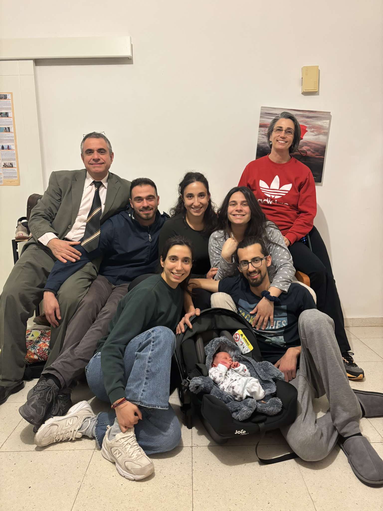
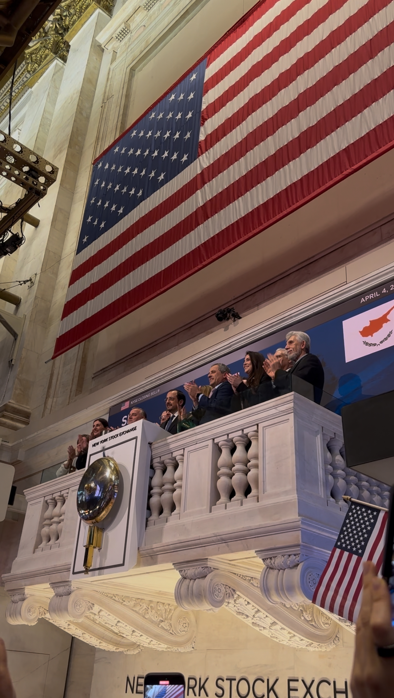
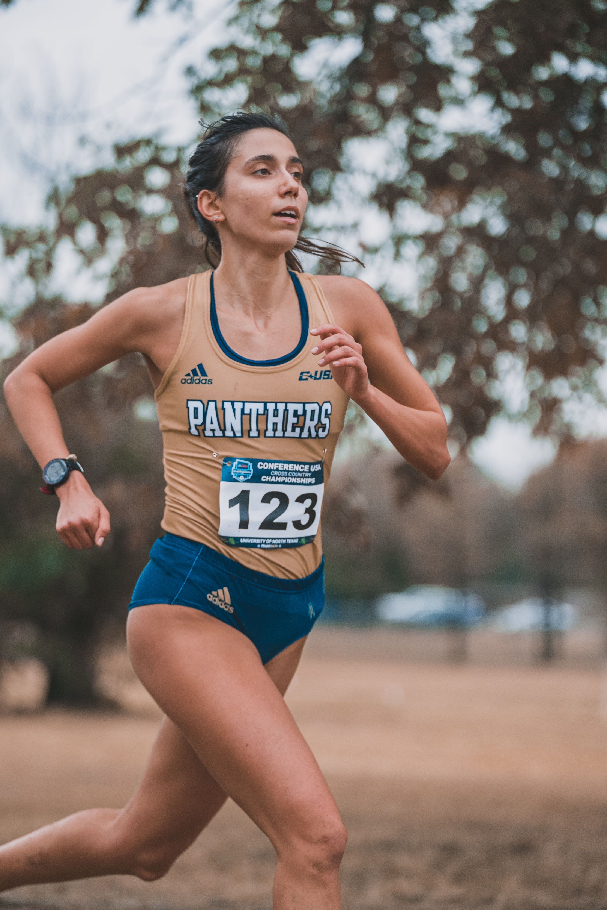

Who am 1?I grew up in Cyprus, surrounded by family, noise, sun, and strong opinions. Life was simple in many ways. School, sports, cousins, long dinners, early mornings. I was always active. Running, moving, doing something. I was not the loudest person in the room, but I was always paying attention. I liked understanding how things worked. Why people behaved the way they did. Why some systems made sense and others did not. Nothing felt extraordinary at the time. It just felt normal. But those early years shaped the way I think. Work hard. Stay curious. Do not overcomplicate things. |
 Click to enlarge |


|
 Click to enlarge |
The road 2 the USI came to the US on a full scholarship, both athletic and academic. It felt big and slightly unreal. I studied Mathematics and Statistics, and later completed my Master’s in Data Science. My undergraduate years were more theoretical, so my coding skills were not the strongest at first. Instead of pretending otherwise, I reached out. I was fortunate to be mentored by Panayiotis Petousis, someone I consider exceptionally talented and generous. Working with him, and becoming part of RootSquare, was a real milestone. I also joined an NLP lab led by Professor Mark Finlayson. NLP, or Natural Language Processing, focuses on teaching computers to understand human language. That experience helped me connect theory with real-world systems. Coming to the US alone during COVID, without knowing anyone, was slightly crazy. But also very cool. It forced growth and introduced me to people who shaped me. Looking back, I am glad I took the leap. |

Another 3 SiblingsThere is nothing I appreciate more than my siblings. I genuinely think it is one of the greatest blessings in the world to grow up with people who guide you, support you, and lift you up. One sister is in the US, which made my move here feel less overwhelming, even if she is technically a six hour flight away. My other sister is the most positive person I know. She has a way of making everything feel lighter. And my brother… I definitely have a weak spot for him. Yes, everybody knows. With him, I opened a thrift store, and it is going fantastically. More on that later. From cool summers in our village in Pedoulas, to spontaneous “en na anapsoume ta karvouna popse” nights, to family trips to Austria, the UK, Israel, Greece, Italy and more, nothing has ever felt more important than family. |
Click to enlarge |


Click to enlarge |
Down 4 Any AdventureI have always said yes to experiences, even when I was not completely ready. Climbing mountains in Greece. Walking the Camino in Spain. Starting projects that felt slightly bigger than my comfort zone. Adventure for me is not about adrenaline. It is about perspective. When you put yourself in new environments, you grow without noticing it. You come back slightly different. Slightly more capable. Slightly less afraid of the unknown. |
5 Years Running CompetitivelyI love running. Really. Being on a scholarship meant it was my priority. For many people, Miami means beach days and nights out. For me, it meant waking up at 5:00 a.m., six out of seven days a week, no exceptions, to make it to practice by 5:30. On workout days, I would wake up at 4:40 just to have coffee first. Looking back, that feels slightly wild. At the time, it felt completely normal. We competed constantly throughout the year. I traveled to more states than I can even properly remember. Alabama, Texas, North Carolina, Virginia, Kentucky, Georgia, New York, Arkansas, Tennessee, California. And all of Florida. By now I know Florida by heart. Orlando, Tallahassee, Gainesville, Tampa, Naples, and everything in between. The number of bus rides to competitions is countless. Early departures. Late returns. Homework on the bus. Music in headphones. Road trips with teammates that felt longer than they were. Running around 60 miles a week while constantly traveling was a lot, but I loved the rhythm of it. At my peak, I truly believed I would break 17 minutes in the 5k. My coach believed it too. I felt locked in. Then I fractured my foot from overuse. It was not dramatic, but it was hard. Running had become my structure, my social circle, my daily anchor. Being in a boot for over two months felt strange. Still, those years gave me more than any race result. The early mornings, the shared struggle, the friendships. I am incredibly grateful for all of it. I still run. Not 60 miles a week anymore, but a steady three or four times. And who knows, maybe a half marathon is next. |
 Click to enlarge |


Click to enlarge |
6 Flights LaterFor a while, I did not really live anywhere. I moved between New York, DC, Los Angeles, Boston, Italy, and back to Miami, staying about a month in each place. I was petsitting, working remotely, and figuring things out as I went. What I remember most is learning how to build routine anywhere. Finding a running route. Joining local clubs. Saying hello to strangers who eventually became friends. Exploring neighborhoods slowly until they felt familiar. Living solo that much teaches you how to be comfortable with yourself. You create your own structure. You decide how you spend your time. It made me more independent, but also more open. I learned how to adapt quickly and feel at home almost anywhere. |
7 Lessons I Learned (Still Learning)Health and people come first. Everything else adjusts around that. Taking things day by day changes your perspective. Most problems feel smaller when you focus on what you can control now. Be grateful to the people who choose you. Do not chase the ones who do not. If you put in real work consistently, it shows. Maybe not immediately. But over time. Ask questions. Curiosity has helped me more than pretending to know ever could. It is okay not to be okay sometimes. That is part of being human. And give when you can. Effort, time, kindness. It tends to come back around. I am still learning all of this. |

Click to enlarge |
8 Things I Thoroughly EnjoyMorning coffee before the world fully wakes up. A good run where I forget about pace and just move. Finding a new running route in a new city. Long dinners that turn into longer conversations. Spontaneous “en na anapsoume ta karvouna popse” nights. Starting something from scratch and slowly seeing it grow. Airport windows and the quiet moment before boarding. Bookstores where I did not plan to buy anything. Being surrounded by ambitious people who are still kind. |
9 Things That Surprise Me About LifeHow quickly everything changes, even when it feels like nothing is moving. How resilient people are when they have no other option. How small the world actually is once you start moving around. How much consistent effort matters more than sudden talent. How temporary most stress turns out to be. How friendships formed under pressure often last the longest. How growth almost always feels uncomfortable at first. How fast time moves, especially when you are not paying attention. How little we truly control, and how freeing that can be. |

Click to enlarge |

Click to enlarge |
10 Years From Now (2036)In 2036, I hope I am still curious. But not just curious. Building. I want to be creating things that matter. Systems that last. Projects that feel intentional, not accidental. I hope I am still running. Maybe not chasing times, but chasing strength. I want to still be close to my family. Maybe hosting those same spontaneous barbecue nights, just in a different city. I hope I am surrounded by ambitious people who are also kind. The combination matters. I want to look back at this version of myself and think, she was brave enough to start. And if everything goes well, I want to still be slightly uncomfortable. That usually means I am growing. |
All pictures of or by Andrea Loizidou.